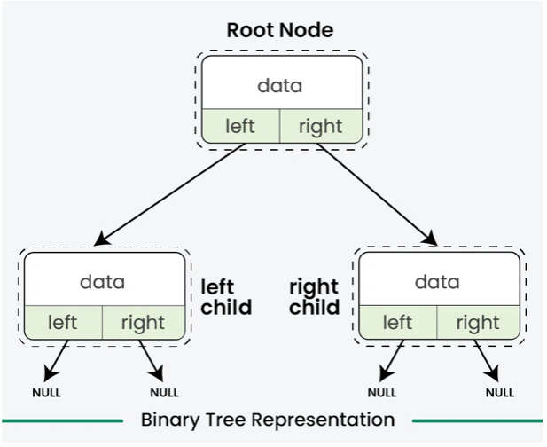
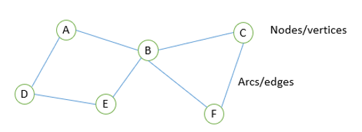
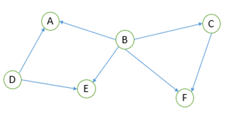

Arrays, Lists and Tuples
Static vs Dynamic Data Structures
| Aspect | Static Data Structure | Dynamic Data Structure |
|---|---|---|
| Definition | A static data structure has a fixed size that is determined at the time of creation and cannot change during execution. | A dynamic data structure can grow or shrink at runtime, allocating and deallocating memory as needed. |
| Examples | Array (mutable – can be changed) Tuple (immutable – cannot be changed) |
List, Linked List, Stack, Queue, Binary Tree, Graph |
| Advantages | • Fixed memory allocation at compile time • No overhead for resizing • Faster access via index |
• Flexible size • Efficient memory usage • Easy insertion, deletion, and merging |
| Disadvantages | • Fixed size may waste memory • Cannot grow or shrink during runtime |
• More complex to implement • Slower access (no direct indexing) • Extra memory overhead for pointers |
No Overhead for Resizing
This means that with static data structures, since the size is fixed and determined at compile time, the program does not need to perform any extra operations to change the size during runtime.
Array
An array is a data structure that stores multiple values of the same data type under a single identifier. Each element is accessed using an index.
Key Features:
- Allows multiple items of data to be stored under one identifier
- Can store data in a table (indexed) structure
- Reduces the need for multiple variables
Example Representation:
Array Elements: [12, 43, 5, 10, 69]
Array Indexes: [0, 1, 2, 3, 4]
Array vs List vs Tuple
| Aspect | Array | List | Tuple |
|---|---|---|---|
| Size | Static (fixed size) | Dynamic (can grow and shrink) | Fixed (cannot change at runtime) |
| Data Types | Same data type for all elements | Can store different data types | Can store different data types |
| Mutability | Mutable (values can be changed) | Mutable (elements can be changed, added, removed) | Immutable (cannot be modified) |
| Memory Allocation | Allocated at compile time | Allocated at runtime | Allocated at runtime |
| Memory Storage | Stored in contiguous memory locations | Stored in non-contiguous memory locations | Stored in contiguous memory locations |
| Access Speed | Fast sequential and indexed access | Slower than arrays | Fast indexed access |
| Example | Array birdName(4) birdName[0] = "pigeon" birdName[1] = "robin" birdName[2] = "blackbird" Result: ["pigeon","robin","blackbird",""] |
numbers = [] numbers.append(12) numbers.append(8) numbers.append(5) Result: [12, 8, 5] numbers.pop() Result: [12, 8] |
# Red colour
colour = (255, 0, 0)
|
| Special Notes | Supports multi-dimensional arrays (e.g., 2D arrays with rows and columns) | Efficient for frequent insertions and deletions | No adding, removing, or changing elements |
Exam Style Question – 2D Arrays (Column Means)
A two-dimensional (2D) array, data, holds numeric data that Karl has entered. The declaration for the array is:
array data[16, 11]The array data has 16 rows and 11 columns. The data in each row is in ascending numerical order.
Karl needs to analyse the data. He needs to find the mean average of each column of the array. The mean is calculated by adding together the numbers in the column and dividing by the quantity of numbers in the column.
For example, the first column mean would be: (1 + 3 + 0 + 12) / 4 = 4
Write an algorithm to output the mean value of each column in the array data. [5]
Mark Scheme (1 mark per bullet)
- Looping through each column
- Looping through each row
- Adding values to a running total
- Calculating the average correctly
- Outputting the average
OCR Pseudocode
for y = 0 to 10
total = 0
for x = 0 to 15
total = total + data[x, y]
next x
print(total / 16)
next yUsing range (Python-style)
for y in range(11):
total = 0
for x in range(16):
total = total + data[x][y]
print(total / 16)Exam Style Question – Declaring a 2D Array
A card game uses a set of 52 standard playing cards. There are four suits: hearts, diamonds, clubs, and spades. Each suit has a card with a number from 1 to 13.
The game randomly gives two players seven cards each. The unallocated cards form the deck.
Players take turns to turn over a card. A valid move is a card of the same suit or the same number as the last card played.
The winner is the first player to play all of their cards.
The cards are held in a 2D array called cards. The first index stores the card number and the second index stores the suit, both as strings.
Write a pseudocode statement or program code to declare the array cards.
array cards[7, 4]An alternative valid declaration could be:
array towns[3, 8]Records and Arrays of Records
Record
- A record is a data structure that groups together related items of data
- Can store more than one data type together
- A record is an unordered data structure
- Can have multiple instances
Example: Player Records
| Player | Name | Score |
|---|---|---|
| Player 1 | Olivia | 35 |
| Player 2 | Luke | 40 |
Creating a Record Structure (Pseudocode)
RECORD player
name : String
score : int
REARRECORDAdding Data to a Record (Pseudocode)
Player1 : player
Player1.name = "Olivia"
Player1.score = 35Array of Records
Records are treated as data types, so they can be held within a single array. This allows storage of multiple records within the same structure.
- Records can be stored in a 1D array
- Allows easy access, indexing, and manipulation of each record
- 1D array can hold multiple items of the same data type (record)
- Maximum number of array elements is known
Example: Array of Player Records
| Index | Name | Score |
|---|---|---|
| 0 | Olivia | 35 |
| 1 | Luke | 40 |
| 2 | Adam | 25 |
| 3 | Alex | 35 |
Array of Records Pseudocode
Players(100) AS player
Players(3).name = "Jane"Record vs Class
| Aspect | Record | Class |
|---|---|---|
| Data | A record is a data structure that stores data together, organised by attributes. | A class is a record with associated methods. Each object stores attributes together. |
| Set up in advance | Attributes and structure are defined by the programmer for a specific purpose. | Constructor method defines the class object. |
| Store different data types | Yes (e.g. name, type, age) | Yes |
| Multiple instances | Yes | Yes |
| Accessed by name | Yes | Yes |
| Differences | oes not include methods | Includes methods and can control visibility (e.g. private properties) |
Question
A games company has developed a game called Kidz Arrowz. Players throw an arrow at a target board and are awarded different points depending on which circle the arrow lands in.
A computer program is required to keep track of the scores for each competition. The user will enter the number of players, and the name of each player, in that competition to a maximum of 10.
The program will then ask for the score of each player in turn. Each competition has 8 rounds, with each player throwing one arrow each round. The program will then display the total score of each player.
The players are declared as a record structure:
record player(string playerName, integer totalScore)Linked Lists
- A linked list is a dynamic data structure – it can grow and shrink during runtime.
- A linked list can be unordered or ordered (alphabetical or numerical order).
- A linked list uses pointers to order the data.
- The items are not necessarily held in contiguous memory locations.
- The physical order in memory may not match the logical order of the list.
- Items can be added and removed without shifting any other items.
- Traversing a linked list always begins at the start / head node.
Difference Between a Linked List and an Array
Pros of linked lists:
- Flexible – elements can be inserted or deleted at any position efficiently.
- Uses dynamic allocation, so the size does not need to be known in advance.
Cons of linked lists:
- More complex to use and access than arrays.
- Pointers require extra memory.
- Random access is not allowed.
Requirements to Implement a Linked List
- Node object – stores the data and a pointer to the next item.
- Start pointer – used to store the first item.
- Null pointer (Ø) – specifies the end of the list.
- Free node – specifies the next free node in the list.
Node Object
class Node
public procedure new(pData)
data = pData // instance variable to store the data
next = None // instance variable storing address of next node
endprocedure
endclassUsing Getter and Setter Methods
class node
public function getData()
return data
endfunction
public function getNext()
return next
endfunction
public procedure setNext(pNext)
next = pNext
endprocedure
public procedure setData(pData)
data = pData
endprocedure
endclassExample usage:
data = input()
new_node = new node(data)
new_node.getData()
new_node.getNext()
new_node.setNext(next)
new_node.setData(data)Linked List Class
class linkedlist
private head : node
public procedure newLinkedList() // constructor
head = null
endprocedure
endclass
my_list = new linkedlist() // instantiate empty linked listInserting a Node (Ordered Linked List)
If the list is ordered, the new element must be inserted in the correct position.
- Store the data in the free node.
- Identify where the item should be inserted.
- Update the pointer of the previous item.
- Set the new item’s pointer to the next node.
- Update the free node pointer.
procedure insert_in_order(data)
new_node = new node(data)
current = head
// Case 1: empty list
if current == null then
head = new_node
// Case 2: insert before head
else if new_node.getData() < current.getData() then
new_node.setNext(current)
head = new_node
// Case 3: insert in middle or end
else
while current.getNext() != null AND
current.getNext().getData() < new_node.getData()
current = current.getNext()
endwhile
new_node.setNext(current.getNext())
current.setNext(new_node)
endif
endprocedureUnordered Linked List Insertion
Insert at Head (fastest method)
procedure insert_unordered(data)
new_node = new node(data)
new_node.setNext(head)
head = new_node
endprocedureInsert at End
procedure insert_end(data)
new_node = new node(data)
if head == null then
head = new_node
else
current = head
while current.getNext() != null
current = current.getNext()
endwhile
current.setNext(new_node)
endif
endprocedureUsed when order does not matter (e.g. stack insertion at head, queue insertion at end).
Removing a Node (Delete Algorithm)
- Traverse the list from the head.
- If the list is empty, stop.
- If the head contains the target data, update the head pointer.
- Otherwise, find the node before the one to delete.
- Update pointers to skip the deleted node.
procedure delete(data)
current = head
// Case 1: empty list
if current == null then
return
// Case 2: delete head
else if current.getData() == data then
head = current.getNext()
// Case 3: delete elsewhere
else
while current.getNext() != null AND
current.getNext().getData() != data
current = current.getNext()
endwhile
if current.getNext() != null then
current.setNext(current.getNext().getNext())
endif
endif
endprocedureNote: Nodes do not move in memory; only pointers are updated.
Traversing a Linked List
Example task: count how many times a particular name occurs in a linked list.
- Initialise a counter.
- Set current node to the head.
- If pointer is NULL, list is empty.
- Compare data and update counter if matched.
- Move to next node.
- Repeat until NULL is reached.
procedure traverse()
current = head
while current != null
print(current.getData())
current = current.getNext()
endwhile
endprocedureSearching a Linked List
Searching must use a linear search.
function search(item)
current = head
found = false
while current != null AND not found
if current.getData() == item then
found = true
else
current = current.getNext()
endif
endwhile
return found
endfunctionStacks & Queues
General Characteristics
- Linear data structures represented by a sequential collection of elements in a fixed order
- Dynamic size
- Can contain elements of different data types
- Random access of elements is not allowed
- Implemented using a list or linked list
Stack
|
Queue
|
||||||||||
|---|---|---|---|---|---|---|---|---|---|---|---|
| LIFO – Last In, First Out | FIFO – First In, First Out | ||||||||||
| Only the top element can be accessed | Only the front element can be accessed | ||||||||||
| One pointer: stack pointer Points to the topmost (last inserted) element |
Two pointers: front and rear | ||||||||||
| push(data) – Add element to stack pop() – Remove element from stack peek() – View top element without removing isFull() – Check if stack is full isEmpty() – Check if stack is empty |
enqueue(data) – Add element to the rear dequeue() – Remove element from the front isFull() – Check if queue is full isEmpty() – Check if queue is empty |
||||||||||
| Uses: • Browser history (Back button) • Undo operations in text editors • Function call stack (program execution) |
Uses: • Printer queue (print jobs in order) • Customer service queue • Task scheduling (e.g. CPU process queue) |
||||||||||
Stack Pointer, Push & Pop Algorithms
Stack Pointer
The stack pointer points to the top element in the stack. In some representations (especially in exams), it may instead point to the next available free space.
Stack PUSH Algorithm
- Check if the stack is full.
- If the stack is full, generate an error and exit.
- If the stack is not full, increment
topto point to the next empty space. - Add the data element where
topis pointing.
Pseudocode: PUSH
if isFull() then
print "stack overflow"
else
top = top + 1
stack[top] = item
end ifisFull() Condition
if stack.length == MAXStack POP Algorithm
- Check if the stack is empty.
- If the stack is empty, generate an error and exit.
- If the stack is not empty, access the data at
top. - Decrease
topby 1. - Return the item.
Pseudocode: POP
if isEmpty() then
print "stack underflow"
else
item = stack[top]
top = top - 1
return item
end ifisEmpty() Condition
if top == -1
if stack.length == 0Display Items in Stack Algorithm
if isEmpty() then
print "stack empty"
else
for i = top to 0
print stack[i]
next i
end ifAlternative Stack Representation
In some exam questions, the stack pointer points to the next available free space instead of the top item.
PUSH (Alternative Representation)
if stackPointer > 9 then
print "stack overflow"
else
stack[top] = item
top = top + 1
end ifPOP (Alternative Representation)
if stackPointer == 0 then
print "stack underflow"
else
top = top - 1
item = stack[top]
return item
end ifExam Notes
- Check whether the stack pointer refers to the top item or the next empty space.
- Use the identifiers exactly as given in the question.
- Think carefully when determining
isEmpty()andisFull()conditions.
Example
theStack.push("H") places the character H onto the stack.
Procedure Example: pushToStack
procedure pushToStack(message)
for x = 0 to message.length - 1
messageStack.push(message.substring(x,1))
next x
endprocedureLinear Stack Implementation
| Procedural Linear Stack Implementation | OOP Linear Stack Implementation |
|---|---|
|
|
Key Differences
- Procedural: Data and functions are separate; stack and top must be passed between procedures.
- OOP: Data and methods are bundled together inside a class.
- OOP approach improves encapsulation, readability, and reusability.
Queue Algorithms (Linear Queue)
Enqueue Algorithm
enqueue(item) inserts the given data item at the rear of the queue.
- Check if the queue is full.
- If full, output an error and stop.
- Otherwise, increment the rear pointer.
- Insert the new data item at the rear position.
Pseudocode: Enqueue
if isFull() then
print "overflow"
else
rear = rear + 1
queue[rear] = data
end ifWorking out isFull()
if rear == maxSize - 1
# OR
if size == MAXDequeue Algorithm
dequeue() removes and returns the item at the front of the queue.
- Check if the queue is empty.
- If empty, output an error and stop.
- Otherwise, copy the data at the front pointer.
- Increment the front pointer.
- Return the data.
Pseudocode: Dequeue
if isEmpty() then
print "queue is empty"
else
data = queue[front]
front = front + 1
return data
end ifWorking out isEmpty()
if front > rear
# OR
front = 0
rear = -1
# OR using size counter
if size == 0Displaying a Linear Queue
for i = front to rear
print queue[i]
next iExam Notes
- Front and rear pointers may be defined either way around — always follow the exam question’s definition.
- Pointers may be referred to as front/rear or head/tail.
- The queue may be linear or circular; this will be stated in the question.
Circular Queue Algorithms
In a circular queue, when items are removed from the front, new data can be added at the rear using the spaces vacated at the front.
Enqueue Algorithm (Circular Queue)
- Check if the queue is full.
- If full, output an error and stop.
- If the rear pointer equals
maxSize - 1, reset rear to0. - Otherwise, increment the rear pointer by 1.
- Insert the new data item at the rear position.
- Increment
sizeby 1.
Pseudocode: Enqueue (Circular)
if isFull() then
print "overflow"
else
if rear == maxSize - 1 then
rear = 0
else
rear = rear + 1
end if
queue[rear] = data
size = size + 1
end ifisFull() Condition
if size == maxSize
return TrueDequeue Algorithm (Circular Queue)
- Check if the queue is empty.
- If empty, output an error and stop (reset front and rear pointers).
- Otherwise, copy data from the front pointer position.
- If front equals
maxSize - 1, reset front to0. - Otherwise, increment the front pointer by 1.
- Decrement
sizeby 1. - Return the data.
Pseudocode: Dequeue (Circular)
if isEmpty() then
print "empty"
front = 0
rear = -1
else
data = queue[front]
if front == maxSize - 1 then
front = 0
else
front = front + 1
end if
size = size - 1
return data
end ifisEmpty() Condition
if size == 0Displaying a Circular Queue
Displaying a circular queue requires wrapping around the array when the end is reached.
if isEmpty() then
print "Queue is empty"
else
temp = front
for i = 0 to size - 1
print queue[temp]
temp = temp + 1
if temp == maxSize then
temp = 0
end if
next i
end ifExam Notes
- Front and rear pointers may be defined either way around — follow the exam question carefully.
- Pointers may be referred to as head/tail or front/rear.
- The queue type (linear or circular) will be specified in the exam question.
Priority Queue
A priority queue is a type of abstract data structure where each element has an associated priority. Instead of being processed in the order they were added (as in a normal queue), elements are processed based on their priority.
Key Features
- Each item in the queue has:
- A value
- A priority level
- The element with the highest priority is removed first
- If two elements have the same priority, they are processed in FIFO (First In, First Out) order
Operations
- Insert (enqueue) – Add an element with a priority
- Remove (dequeue) – Remove the element with the highest priority
Implementation
- Arrays / Lists (less efficient)
- Heaps (more efficient, e.g. binary heap)
Example Use Cases
- Task scheduling (e.g. CPU processes)
- Dijkstra’s algorithm (shortest path in graphs)
- Emergency room triage systems
Concept Illustration
In a priority queue, the element with the highest priority (e.g. 2) is dequeued first, while the element with the lowest priority (e.g. 10) remains until later.
Linear Queue Implementation
| Procedural Linear Queue Implementation | OOP Linear Queue Implementation |
|---|---|
|
|
Key Differences
- Procedural approach: Queue data and pointers are passed between functions.
- OOP approach: Queue data and operations are encapsulated within a class.
- OOP queues improve modularity, readability, and reuse of code.
Tree
A tree is a non-linear, hierarchical data structure made up of nodes connected by edges. It has one root node and zero or more child nodes. Leaf nodes have no children.
Diagram placeholder: Tree showing root, children, edges and leaf nodes

| Term | Description |
|---|---|
| Root | Top node of the tree |
| Node | Stores a data value |
| Edge | Connection between nodes |
| Leaf | Node with no children |
Binary Search Tree (BST)
A BST is a binary tree where values in the left subtree are smaller than the node, and values in the right subtree are larger.
BST showing left < root < right

| Property | Explanation |
|---|---|
| Children | Maximum of two per node |
| Balanced | Search time O(log n) |
| Unbalanced | Search time degrades to O(n) |
What is a Binary Tree?
A binary tree is a non-linear data structure where each node can have a maximum of two children, called the left child and the right child.
Method 1: Linked-Node Implementation
Each node is an object that stores the data and references (pointers) to its left and right children. The tree stores a reference to the root node.
Node containing data, left pointer, and right pointer
| Component | Purpose |
|---|---|
| data | Stores the value in the node |
| left | Reference to left child node |
| right | Reference to right child node |
| root | Reference to the first node in the tree |

class Node
private data
private left
private right
procedure new(new_data)
data = new_data
left = null
right = null
end procedure
end class
class BinaryTree
private root
procedure new()
root = null
end procedure
end classMethod 2: Array / Table Implementation
The binary tree is stored in a table (often a 2D array). Each row represents a node and stores the node’s data and the indexes of its left and right children.
Table showing node index, data, left index, right index
| Index | Data | Left Child | Right Child |
|---|---|---|---|
| 1 | 50 | 2 | 3 |
| 2 | 30 | 4 | 5 |
| 3 | 70 | null | null |
# Each row stores: data, leftIndex, rightIndex
tree[1] = [50, 2, 3]
tree[2] = [30, 4, 5]
tree[3] = [70, null, null]Comparison of Implementations
| Feature | Linked-Node | Array / Table |
|---|---|---|
| Memory size | Dynamic | Often fixed |
| Insertion & deletion | Easier | More complex |
| Exam suitability | Good | Very common |
Algorithm: Insert into a Binary Search Tree


| Step | Action |
|---|---|
| 1 | Create a new node |
| 2 | If root is null, set root = new node |
| 3 | Compare value and move left or right |
| 4 | Insert at first null pointer |
Procedure insert(new_value)
new_node = new Node(new_value)
if root == null then
root = new_node
return
end if
current = root
parent = null
while current != null
parent = current
if new_value < current.data then
current = current.left
else
current = current.right
end if
end while
if new_value < parent.data then
parent.left = new_node
else
parent.right = new_node
end if
End procedureAlgorithm: Delete a Node from a Binary Search Tree (BST)
Deleting a node from a BST depends on how many children the node has. The tree must remain ordered after deletion.
| Case | Situation | Action |
|---|---|---|
| Leaf node | No children | Remove the node by setting the parent pointer to null |
| One child | Left or right child only | Replace the node with its child (parent points to child) |
| Two children | Left and right children | Find the in-order successor (smallest value in right subtree), copy its value into the node, then delete the successor |
BST delete cases (leaf, one child, two children)

Procedure delete(root, target)
current = root
parent = null
# Step 1: Find node to delete
while current != null and current.data != target
parent = current
if target < current.data then
current = current.left
else
current = current.right
end if
end while
if current == null then
return # value not found
end if
# Step 2: Case 1 – No children
if current.left == null and current.right == null then
if parent == null then
root = null
else if parent.left == current then
parent.left = null
else
parent.right = null
end if
# Step 3: Case 2 – One child
else if current.left == null or current.right == null then
if current.left != null then
child = current.left
else
child = current.right
end if
if parent == null then
root = child
else if parent.left == current then
parent.left = child
else
parent.right = child
end if
# Step 4: Case 3 – Two children
else
successor_parent = current
successor = current.right
while successor.left != null
successor_parent = successor
successor = successor.left
end while
current.data = successor.data
if successor_parent.left == successor then
successor_parent.left = successor.right
else
successor_parent.right = successor.right
end if
end if
End procedureTree Traversals

| Traversal | Order | Use |
|---|---|---|
| Pre-order | Root → Left → Right | Copy tree |
| In-order | Left → Root → Right | Sorted output |
| Post-order | Left → Right → Root | Delete tree |
| Breadth-first | Level by level | Shortest path |
Algorithm: Pre-order Traversal
Procedure preorder(node)
if node != null then
print(node.data)
preorder(node.left)
preorder(node.right)
end if
End procedureAlgorithm: In-order Traversal
Procedure inorder(node)
if node != null then
inorder(node.left)
print(node.data)
inorder(node.right)
end if
End procedureAlgorithm: Post-order Traversal
Procedure postorder(node)
if node != null then
postorder(node.left)
postorder(node.right)
print(node.data)
end if
End procedureAlgorithm: Breadth-First Traversal
Procedure breadth_first(root)
if root == null then return
q = queue()
q.enqueue(root)
while q not empty
current = q.dequeue()
print(current.data)
if current.left != null then
q.enqueue(current.left)
end if
if current.right != null then
q.enqueue(current.right)
end if
end while
End procedureGraph
A graph models relationships using vertices (nodes) and edges. Graphs do not have a single root node.

| Type | Description |
|---|---|
| Undirected | No direction on edges  |
| Directed | Edges have direction  |
| Weighted | Edges store values (distance, cost)  |
Graph Representations
| Representation | Description | Best For |
|---|---|---|
| Adjacency List | Lists neighbours for each node | Sparse graphs |
| Adjacency Matrix | 2D array of connections | Dense graphs |
Adjacency List and Adjacency Matrix (Example)
Adjacency List
Each node stores a list of the nodes it is directly connected to. This graph is undirected and unweighted.
Graph = {
A: [B, C],
B: [A, D, E],
C: [A, F],
D: [B],
E: [B, F],
F: [C, E]
}| Node | Adjacent Nodes |
|---|---|
| A | B, C |
| B | A, D, E |
| C | A, F |
| D | B |
| E | B, F |
| F | C, E |
Adjacency Matrix
Rows and columns represent nodes. A value of 1 means an edge exists, 0 means no edge.
| A | B | C | D | E | F | |
|---|---|---|---|---|---|---|
| A | 0 | 1 | 1 | 0 | 0 | 0 |
| B | 1 | 0 | 0 | 1 | 1 | 0 |
| C | 1 | 0 | 0 | 0 | 0 | 1 |
| D | 0 | 1 | 0 | 0 | 0 | 0 |
| E | 0 | 1 | 0 | 0 | 0 | 1 |
| F | 0 | 0 | 1 | 0 | 1 | 0 |
Note: The matrix is symmetrical because the graph is undirected.
BFS vs DFS
| Feature | BFS | DFS |
|---|---|---|
| Data structure | Queue | Stack . |
| Traversal | Level by level | Deep then backtrack |
| Best use | Shortest path | Explore all paths |
 .
.
Procedure bfs(graph, start)
visited = []
q = queue()
q.enqueue(start)
while q not empty
node = q.dequeue()
if node not in visited
visited.append(node)
for neighbour in graph[node]
q.enqueue(neighbour)
print(visited)
End procedure
Procedure dfs(graph, start)
visited = []
s = stack()
s.push(start)
while s not empty
node = s.pop()
if node not in visited
visited.append(node)
for neighbour in reversed(graph[node])
s.push(neighbour)
print(visited)
End procedureExample Graph (Used for BFS & DFS)
Assume the following adjacency list representation of a graph, starting traversal from node A.
graph = {
A: [B, C],
B: [A, D, E],
C: [A, F],
D: [B],
E: [B, F],
F: [C, E]
}
Breadth-First Search (BFS) – Queue Table
BFS explores the graph level by level using a queue.
| Step | Current Node | Queue | Visited |
|---|---|---|---|
| 1 | A | B, C | A |
| 2 | B | C, D, E | A, B |
| 3 | C | D, E, F | A, B, C |
| 4 | D | E, F | A, B, C, D |
| 5 | E | F | A, B, C, D, E |
| 6 | F | — | A, B, C, D, E, F |
Depth-First Search (DFS) – Stack Table
DFS explores as far as possible down one branch before backtracking, using a stack.
| Step | Current Node | Stack | Visited |
|---|---|---|---|
| 1 | A | C, B | A |
| 2 | B | C, E, D | A, B |
| 3 | D | C, E | A, B, D |
| 4 | E | C, F | A, B, D, E |
| 5 | F | C | A, B, D, E, F |
| 6 | C | — | A, B, D, E, F, C |
BFS vs DFS (Graph Traversal Summary)
| Feature | BFS | DFS |
|---|---|---|
| Data structure | Queue | Stack |
| Traversal order | Level by level | Deep then backtrack |
| Visited order (example) | A, B, C, D, E, F | A, B, D, E, F, C |
| Best use | Shortest path (unweighted) | Exploring all paths |
Hashing
Large collections of data, for example customer records in a database, need to be accessible very quickly without having to look through all the records. This can be done by holding an index of the physical address on the file where the data is held.
Hashing Algorithm
A hashing algorithm is applied to the value in the key field of each record to transform it into an address. One common hashing algorithm is to divide the key by the number of available addresses and take the remainder as the address.
Hash Table
A hash table is a collection of items stored in such a way that they can quickly be located. The hash table could be implemented as an array or list of a given size with a number of empty spaces.
Empty Hash Table Example
An empty hash table that can store a maximum of 11 items is shown, with spaces labelled from 0 to 10.
All locations initially contain the value Empty.
Storing Items Using Hashing
Items 78, 55, 34, 19 and 29 are stored in the table using division by 11 and taking the remainder.
- 78 → Hash value 1
- 55 → Hash value 0
- 34 → Hash value 1
- 19 → Hash value 8
- 29 → Hash value 7
Final Hash Table Contents
After insertion, the hash table contains:
- Index 0: 55
- Index 1: 78
- Index 2: 34
- Index 7: 29
- Index 8: 19
- All other locations remain empty
Hashing a String
A hash function can be created for alphanumeric strings by using the ASCII code for each character. To hash the word CAB, the ASCII values for each letter are added together. If there are 11 spaces in the hash table, the total is divided by 11 and the remainder is taken as the hash value.
Searching for an Item
When searching for an item, the following steps are followed:
- Apply the hashing algorithm to the key field of the item
- Examine the resulting cell in the list
- If the item is there, return the item
- If the cell is empty, the item is not in the table
- If there is another item in that spot, keep moving forward until either the item is found or a blank cell is encountered, indicating that the item is not in the table
Implementation
Hash tables are used in the implementation of the data structure called a dictionary.
Dictionaries
A dictionary is an abstract data type consisting of associated pairs of items, where each pair consists of a key and a value. In Python, dictionaries are written as comma-separated pairs in the form key:value and enclosed in curly braces.
Example:
IDs = {342:'Harry', 634:'Jasmine', 885:'Max', 571:'Sheila'}
Operations on Dictionaries
It is possible to implement a dictionary using either a static or a dynamic data structure. The implementation needs to include the following operations:
# Create a new empty dictionary
my_dict = {}
# Add a new key:value pair to the dictionary
my_dict["name"] = "Alice"
print("After adding:", my_dict)
# Return value associated with key 'name'
value = my_dict.get("name")
print("Value for 'name':", value)
# Return True or False depending on whether key is in the dictionary
has_age = "age" in my_dict
print("Is 'age' a key?", has_age)
# Return the length of the dictionary
length = len(my_dict)
Dealing with Collisions
A collision can happen when two keys generate the same hash address.
Linear Probing
Linear probing could be used. Move through the structure one space at a time to find the next free space.
Chaining
Chaining could be used. Each location points to the start of a linked list. The new item is added to the end of the linked list or placed in a free space.
Comparison of Linked Lists and Hash Tables
Overall, a hash table is likely to be the best option (assuming it has enough space and a good hashing algorithm which produces a hash quickly and with few collisions). It will give very consistent performance even as the list grows.
Linked Lists vs Hash Tables
| Linked List | Hash Tables |
|---|---|
| Searching a linked list involves starting at the first node and following the pointers until either the desired value is found or the end of the list is reached, meaning the item isn’t in the list. | Searching a hash table requires the key to be hashed and the correct location accessed. The time taken is largely dependent on the time to create the hash. |
| The bigger the linked list grows, the longer it takes to search. If a linked list doubles in size, it will on average take twice as long to search. A list of size n takes on average n/2 checks. In Big O notation this is O(n), or linear complexity. | If collisions are ignored, the time to find an item stays the same regardless of the size of the list. In other words it has O(1) or constant complexity. |
| If items are added to the end of the linked list and the location of the last node is stored, the new item can be added directly. The time to add items is constant. | As the list grows, collisions become more likely. Linear probing and chaining mean that once a location has been found, the time taken grows linearly with the number of collisions at that location. However, this still performs significantly better than a linked list. |
| If items are added in some sort of order, the time to add items grows linearly due to the time spent searching for the correct position. | Adding items to a hash table involves hashing the key and placing it in the correct location. This takes a constant amount of time unless collisions occur, in which case there is an overhead that grows with the number of collisions. |